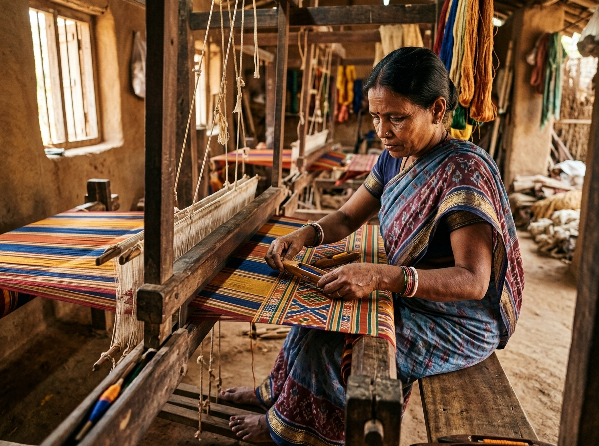

Dukaan is an AI-powered platform that empowers marginalized rural artisans to digitize their crafts, generate market-ready catalogs in 2 minutes, and reach buyers directly — even in zero-internet environments.
Understand the rural digital gap and how Dukaan eliminates intermediaries.
Interactive 5-step journey and live Gemini multimodal pipeline demo.
Live offline simulator with SQLite edge caching and background sync.
Explore all 8 screens of the mobile interface designed for artisans.
India's rural artisan sector harbors centuries of heritage techniques, but traditional digital tools are too complex, cloud-dependent, and intermediary-driven. Here is how Dukaan transforms this reality.
Complex English-only interfaces with steep learning curves make commercial e-commerce inaccessible to rural artisans.
Writing descriptions, assigning categories, and tagging materials requires tedious manual input that takes hours per product.
Artisans rely on local middlemen who take substantial profit margins while the creator receives minimal remuneration.
Cloud-only apps break in low-bandwidth rural belts, causing data loss and preventing product listing on the spot.
Artisans simply speak in their mother tongue (Hindi, Marathi, Bengali, etc.) and snap a photo; no keyboard typing required.
Multimodal AI generates structured titles, craft categories, materials, and captivating cultural stories in seconds.
Every artisan gets a public digital storefront with verifiable GI provenance, allowing direct buyer connections with zero commission.
Listings save immediately to on-device storage. When network signals return, our sync engine commits everything to the cloud.
A streamlined five-stage pipeline designed specifically for rural artisans to turn a physical craft into a market-ready digital product with minimal typing.
The artisan snaps a craft photo or speaks a vernacular voice note.
Gemini AI analyzes visual textures, motifs, and voice context.
Synthesizes structured title, craft story, category, and price range.
Saved immediately to local SQLite storage with auto-sync capability.
Published to verified digital storefront with direct buyer linkage.
The artisan captures a high-resolution photo of their handcrafted piece using standard mobile camera optics or selects existing media from device gallery. Vernacular voice input can be recorded alongside to capture cultural context.
Select a sample craft below to watch Google Gemini transform unstructured photo and voice notes into an e-commerce catalog entry.

"Handcrafted pure cotton & silk textile woven on pit looms using traditional tie-dye technique."
A finely woven handcrafted textile created using traditional artisan tie-dye techniques passed down through generations. Features distinct geometric motifs and breathable natural hand-spun weave.
Designed from the ground up for rural realities. Artisans can create, edit, and store complete product listings without internet. When connected, changes automatically sync to Cloud Firestore.
Cross-platform mobile UI enabling high frame-rate native apps on Android and iOS devices.
State-of-the-art multimodal vision and vernacular language model for craft taxonomy and storytelling.
Lightweight on-device transactional database guaranteeing zero data loss when village signals drop.
Distributed NoSQL store for product listings and CDN-backed media asset storage.
Frictionless phone OTP login tailored for rural artisans who may not maintain email accounts.
Proposed integration of quantized mobile models (e.g. Gemma / MediaPipe) for zero-connectivity draft generation.
Click any screen button below to test all 8 screens of the Dukaan mobile interface designed for rural artisans.
Turn product information into a structured digital listing with AI assistance. Automatically extracts titles, descriptions, categories, and suggested pricing.
Committed engineers bringing empathy, craftsmanship, and AI together for the SIH problem statement: AI-Driven Market Linkage and Smart Cataloging Mobile Application for Marginalized Artisans.
System architecture, end-to-end integration, and AI system orchestration for Dukaan.
Prompt engineering, multimodal visual parsing, and vernacular language modeling.
Flutter client development, camera subsystem, and voice input accessibility.
Firebase Cloud Firestore schemas, Authentication, and sync engine design.
SQLite local caching algorithms, device state persistence, and sync conflict handler.
Artisan-centered design workflows, storefront layout, and buyer interaction flows.